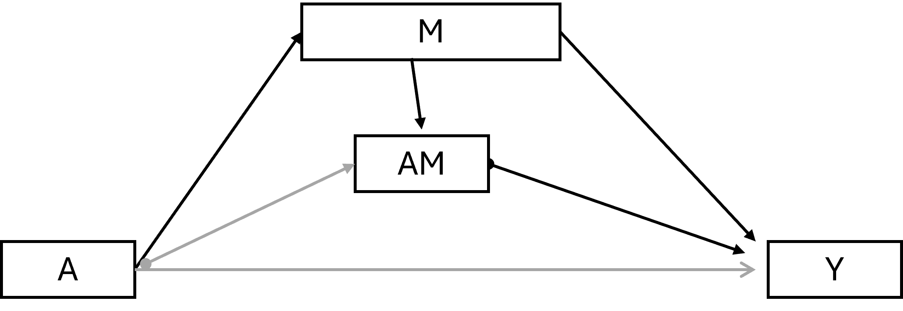

6 Introduction to causal mediation analysis
In this session we will go over fundamental concepts of causal inference in general and then focus more specifically on causal mediation analysis.
Objective of this session
- Foundational concepts in causal inference
- From causal effects to causal mediation
- Core causal assumptions
- Causal mediation effects
- Practical implementation using R
6.0.1 Recall the major limitations of traditional mediation methods:
- Non-linearity
- Interactions
- Confounding
- Multiple mediators
6.0.2 Causal mediation analysis is an extension of the traditional approach:
- Outlining all confounding assumptions needed
- Handling non-linearity and interaction
- Clearly defining estimands of interest
- Different effect decompositions
6.1 What is a cause?
We employ causal inference constantly in our daily lives. Consider a simple example: when you press a light switch, you expect the light to turn on. Or in another scenario, you anticipate that performing action A will result in outcome Y. In some instances, we can identify deterministic relationships where action A will lead to outcome Y. While these straightforward cause-and-effect relationships are intuitive and help us navigate the world, they become significantly more complex when we explore health outcomes.
6.1.1 Individual causal effect
When investigating health outcomes, we would ideally want to know if you do X, then Y will happen. We could have a specific question:
Will take the magic pill reduce my risk of developing T2D in 5 years?
To answer this question we would ideally have you take the magic pill over 5 years and diagnose whether you get T2D. Then, we would turn back time, and make you do not take the pill and then diagnose T2D. If there is a difference between your two outcomes, then we say there is a causal effect.
But we can never do this in the real world.
Notation
A = received treatment/intervention/exposure (e.g., 1 = intervention, 0 = no intervention)
Y = observed outcome (e.g., 1 = developed the outcome, 0 = no outcome)
\(Y^{a=1}\) = Counterfactual outcome under treatment a=1 (i.e., the outcome had everyone, counter to the fact, received treatment a = 1)
\(Y^{a=0}\) = Counterfactual outcome under treatment a =0 (i.e., the outcome had everyone, counter to the fact, received treatment a = 0)
6.1.2 Average causal effect
Instead, we can perform a randomized controlled trial. We now ask a slightly different question:
Will taking the magic pill reduce the risk of T2D?
We can randomly assigning one group to take the pill, and the other group not to take the pill over 5 years. Then we compare the average risk of T2D after 5 year in each of the groups. If there is a difference, we could say there is an average causal effect.
More formally we can now define a causal effect (1):
$E[Y^{a=1} = 1]-E[Y^{a=0} = 1] $
Notation
We now modify the terms a little.
\(E[Y^{a=1}]\) the average counterfactual outcome, had all subjects in the population received treatment a = 1.
\(Pr[Y^{a=1}]\) the proportion of subjects that would have developed the outcome Y had all subjects in the population of interest received treatment a = 1.
\(E[Y^{a=0}]\) the average counterfactual outcome, had all subjects in the population received no treatment a = 0.
\(Pr[Y^{a=0}]\) the proportion of subjects that would have developed the outcome Y had all subjects in the population of interest received no treatment a = 0.
6.2 From Causal effects to Causal mediation
When we want to understand not just if, but how the magic pill affects risk of T2D, we need to consider mediating factors. For example:
Will taking the pill reduce my BMI, which in turn decreases the risk of T2D? This requires us to decompose the total effect into direct and indirect pathways.

For mediation effects, we need to consider scenarios that cross between different possible worlds, such as: What would my risk of getting T2D be if I take the pill (treatment = 1), BUT my BMI remained at the level it would have been had I NOT taken the pill (mediator at level from treatment = 0), compared to the risk of T2D if I had taken the pill, and my BMI were at the level it would naturally reach under treatment (treatment =1).
These cross-world counterfactuals combine elements from two incompatible realities. They cannot be directly observed even in principle, which creates fundamental identification challenges.
6.3 Causal Mediation Estimation Approaches
Counterfactual-based direct and indirect effects can be estimated from regression models, provided that the no confounding assumption hold. To be able to do so, we need a model for the mediator and a model for the outcome.
Note
Causal approaches define effects using the counterfactural framework, before estimating th effects using statistical methods.
Model for the mediator:
\(E(M|A = a, W = w) = \beta_0 + \beta_1a + \beta'_2w\)
Model for the outcome:
\(E(Y|A = a, M = m, W = w) = \sigma_0 + \sigma_1a + \sigma_2m + \sigma_3am + \sigma'_4w\)
From these two regression models we can estimate the direct and indirect effect.
Direct effect: \(E[(Y(a=1,M_a=0))\) - \(Y(a=0,M_a=0))]\)
Indirect effect: \(E[(Y(a=1,M_a=1))\) - \(Y(a=1,M_a=0))]\)
While regression-based approaches are commonly used, several alternative estimation methods are available, including Inverse probability weighting (IPW), G-computation, and structural equation models (SEM).
Note: additional approaches also exists, but we will not focus on these in this course.
6.4 Casual Mediation Effects
6.4.1 Defining estimands
Imagine we have a hypothetical randomized controlled trial where we give participants treatment or no treatment on a specific outcome Y.
\(Y^{a=1} - Y^{a=0}\)
For mediation, we are also interested in the effect of a mediator on this pathway. Now image that we also intervene on the mediator in a new hypothetical randomized controlled trial.
\(Y^{m=1} - Y^{m=0}\)
Now consider if we, in the same trial, could intervene on both because we are interested in whether treatment causes the outcome because it causes the mediator.
Notation
\(Y^a\) = a subject’s outcome if treatment A were set, possible contrary to fact, to a
\(M^a\) = a subject’s value of the mediator if the exposure A were set to the value of a
\(Y^{a,m}\) = a subject’s outcome if A were set to a and M were set to m
\(Y^{a,M_a}\) = a subject’s outcome if A were set to a and M were set the value m would have had had a been set to a. Note, this is a nested counterfactual
We can now define these estimands:
- the controlled direct effect (CDE)
- natural direct effect (NDE)
- natural indirect effect (NIE)
6.4.1.1 Controlled direct effect
\(Y^{a=1,m}\) - \(Y^{a=0,m}\)
We intervene on \(a\) but fix \(m\) to a certain value. The CDE is how much the outcome would change on average if the mediator were fixed at level m uniformly in the population but the treatment were changed from 0 to 1.
This could be relevant in the context of a change in a policy that impacted the mediator for everyone. For instance, if air pollution was a mediator between physical activity and cardiovaular disease risk. If a new policy would change the level of air pollution for all while we implement an intervention to increase biking in the city.
This effect is not used that often. But can be highly relevant in some situations.
6.4.1.2 (Pure) Natural direct effect
\(Y^{a=1,M_a=0}\) - \(Y^{a=0,M_a=0}\)
The PNDE is how much the outcome would change if the exposure was set at a = 1 versus a* = 0 but for each individual the mediator was kept at the level it would have taken, for that individual, in the absence of the exposure.
Note that the word “natural” refers to the nested counterfactual, the level the mediator would have taken in the absence of exposure.
6.4.1.3 (Total) Natural indirect effect
\(Y^{a=1,M_a=1}\) - \(Y^{a=1,M_a=0}\)

The NIE is how much the outcome would change on average if the exposure were fixed at level a = 1 but the mediator were changed from the level it would take if a* = 0 to the level it would take if a = 1.
Note that exposure has to have an effect on M otherwise this will be zero.
Decomposition
TE = PNDE + TNIE this decomposition usually is for research question: ‘is there a mediated effect?’ or ‘is the causal effect mediated by the proposed mediator?’ (2)
6.4.1.4 Total natural direct effect
TNDE = \(Y^{a=1,M_a=1}\) - \(Y^{a=0,M_a=1}\)
Note, different from above in that the mediator is kept at the level it would have taken in the presence of the exposure.
6.4.1.5 Pure natural indirect effect
PNIE = \(Y^{a=0,M_a=1}\) - \(Y^{a=0,M_a=0}\)
Note, this is different from the TNIE in that the exposure is set to no intervention.
Decomposition
TE = PNIE + TNDE this decomposition usually is for research question: ‘does the exposure influence the outcome in other ways, not through this mediator?’ (2)
6.4.2 Effect decomposition
Using the causal inference framework also allow for effect decomposition, even when there are interaction and non-linearity.
Effect decomposition is important when we want to assess relative contributions such as the proportion mediated and eliminated.
TE = PNDE + TNIE = TNDE + PNIE
More information about decomposition of effects can be found in (3).
6.4.3 Proportions
Proportion mediated:
\(PM = NIE / TE\)
Proportion eliminated:
\(PE = (TE-CDE) / TE\)
6.5 Why Causal Mediation Analysis?
Neither the product method nor the difference method in traditional mediation analysis can effectively account for interaction effects or non-linear relationships between variables. Traditional methods also lack attention to confounding and temporallity.
Causal mediation analysis addresses these limitations through more sophisticated approaches. Specifically, it can:
Constructing a comprehensive causal model that explicitly incorporates non-linear relationships and interaction effects. Counterfactual approaches can better handle complex, non-parametric relationships.
Decomposition of effects: Counterfactual methods allow for more nuanced decomposition of total effects into direct and indirect effects, especially in the presence of treatment-mediator interactions.
Counterfactual frameworks extend more naturally to settings with multiple mediators
6.6 Core Causal Assumptions
6.6.1 Association vs Causation
What makes it complicated to estimate a causal effect is that we cannot observe the outcome under different treatments.
When we only have a subset of the outcomes, we have an association. This is illustrated in Figure 6.5.

Note
Causal Assumptions
- Exchangeability
The risk of the outcome in A = 1 would have been the same as the risk of the outcome in A = 0, had those in A = 1 received A = 0.
Think about a randomized trial where you, by mistake, give the intervention to the other group. The effect should be the same as the one you would have observed had the groups been correct.
We can also have conditional exchangeability. The risk is similar in subsets of the population. That could be within the levels of a variable W (e.g., education).
- Consistency
The treatments under comparison are well-defined and correspond to the versions of treatment observed in the data:
- Precise definition of \(Y^a\) via a
- Link counterfactual outcomes with observed outcomes
\(Y^a = Y\) for every individual with A = a.
The observed outcome for all treated equals the outcome if they had received the treatment (the potential outcome).
- Positivity
The probability of receiving every value of treatment conditional on L is greater than zero. In other words, there must be a probability of being assigned to each treatment level.
Image if we don’t have anyone with A = 0 among those with L=1 (e.g. long education), then we cannot estimate the conditional probability of the outcome.
6.6.2 Confounding assumptions in Causal Mediation Analysis
Confounding assumptions are critical for valid causal inferences in mediation analysis. These assumptions specify the conditions under which we can interpret our estimates as truly causal rather than merely associational.
no unmeasured exposure-outcome confounding
no unmeasured exposure-mediator confounding
no unmeasured mediator-outcome confounding
mediator-outcome confounding not affected by the exposure/treatment (post-treatment confounder or intermediate confounder)
By using DAGs, the assumptions about confounding are made much more explicit.
We can see that we not only have to take confounding between the treatment and outcome into account, but we also have to take mediator-outcome (\(A \leftarrow W \rightarrow Y\)) confounding into account.
In addition, we can have a more complicated situation where the treatment also impacts another mediator that is also a mediator-outcome confounder.
Below DAG shows where the mediator-outcome relation is affected by treatment:
From the DAG rules, we have a special problem that we cannot solve with traditional regression approaches. If we adjust for W2 we open a backdoor path by adjusting for the collider \(W1 \rightarrow W2 \leftarrow A\).
6.7 Practical Examples using R package
We can easily conduct mediation analysis using R package once you understand the basic concepts of mediation.
Before you run the analytical models
- make a DAG display the assumed causal model
- check the confounding assumptions for each path
- ensure the temporal ordering of the variables
# This includes readr, or use library(readr) specifically
nhanes <- read_csv(here::here("data/NHANES.csv"))Rows: 10000 Columns: 76
── Column specification ────────────────────────────────────────────────────────
Delimiter: ","
chr (31): SurveyYr, Gender, AgeDecade, Race1, Race3, Education, MaritalStatu...
dbl (45): ID, Age, AgeMonths, HHIncomeMid, Poverty, HomeRooms, Weight, Lengt...
ℹ Use `spec()` to retrieve the full column specification for this data.
ℹ Specify the column types or set `show_col_types = FALSE` to quiet this message.data <- nhanes %>%
dplyr::select(ID,
w1 = Age,
w2 = Gender,
w3 = Education,
w4 = Smoke100,
a = PhysActive,
m = BMI,
y = Pulse,
y2 = Diabetes
) %>%
na.omit()First, load the library:
library(CMAverse)Next, we can plot the DAG based on the research question:
cmdag(
outcome = "y", exposure = "a", mediator = c("m"),
basec = c("W1", "W2", "W3", "W4"), postc = NULL, node = FALSE, text_col = "black"
)Then we can start estimate causal mediation effects using the function ‘cmest’.
res_rb <- cmest(
data = data,
model = "rb", # rb means regression based
outcome = "y", # this is the name of outcome
exposure = "a", # this is the name of exposure
mediator = "m", # this is the name of mediator
basec = c("w1"), # this is confounding factors, you can add more confounders here
EMint = TRUE, # whether include interaction, TRUE indicates to include
mreg = list("linear"), # specify the mediator model, we use linear regression here
yreg = "linear", # specify the outcome model, we use linear regression here
astar = 0, # the level of exposure (not exposed)
a = 1, # the level of exposure (exposed)
mval = list(27.8), # specifiy the value of controlled mediator
estimation = "paramfunc", # parameteric function
inference = "delta"
)Warning in estinf(): a is not a value of the exposure; Yes is usedWarning in estinf(): astar is not a value of the exposure; No is usedsummary(res_rb)Causal Mediation Analysis
# Outcome regression:
Call:
glm(formula = y ~ a + m + a * m + w1, family = gaussian(), data = getCall(x$reg.output$yreg)$data,
weights = getCall(x$reg.output$yreg)$weights)
Coefficients:
Estimate Std. Error t value Pr(>|t|)
(Intercept) 75.200976 0.954088 78.820 < 2e-16 ***
aYes -5.625108 1.252664 -4.491 7.22e-06 ***
m 0.143529 0.028201 5.090 3.68e-07 ***
w1 -0.122102 0.008402 -14.533 < 2e-16 ***
aYes:m 0.125536 0.042449 2.957 0.00311 **
---
Signif. codes: 0 '***' 0.001 '**' 0.01 '*' 0.05 '.' 0.1 ' ' 1
(Dispersion parameter for gaussian family taken to be 134.882)
Null deviance: 978151 on 6915 degrees of freedom
Residual deviance: 932170 on 6911 degrees of freedom
AIC: 53553
Number of Fisher Scoring iterations: 2
# Mediator regressions:
Call:
glm(formula = m ~ a + w1, family = gaussian(), data = getCall(x$reg.output$mreg[[1L]])$data,
weights = getCall(x$reg.output$mreg[[1L]])$weights)
Coefficients:
Estimate Std. Error t value Pr(>|t|)
(Intercept) 29.440321 0.267707 109.972 <2e-16 ***
aYes -1.883085 0.162184 -11.611 <2e-16 ***
w1 0.007546 0.004793 1.575 0.115
---
Signif. codes: 0 '***' 0.001 '**' 0.01 '*' 0.05 '.' 0.1 ' ' 1
(Dispersion parameter for gaussian family taken to be 43.91474)
Null deviance: 310099 on 6915 degrees of freedom
Residual deviance: 303583 on 6913 degrees of freedom
AIC: 45790
Number of Fisher Scoring iterations: 2
# Effect decomposition on the mean difference scale via the regression-based approach
Closed-form parameter function estimation with
delta method standard errors, confidence intervals and p-values
Estimate Std.error 95% CIL 95% CIU P.val
cde -2.135202 0.289670 -2.702945 -1.567 1.69e-13 ***
pnde -1.884592 0.290945 -2.454834 -1.314 9.33e-11 ***
tnde -2.120987 0.289390 -2.688180 -1.554 2.32e-13 ***
pnie -0.270278 0.057982 -0.383921 -0.157 3.14e-06 ***
tnie -0.506673 0.073986 -0.651682 -0.362 7.48e-12 ***
te -2.391265 0.286308 -2.952417 -1.830 < 2e-16 ***
intref 0.250610 0.086005 0.082043 0.419 0.003570 **
intmed -0.236395 0.082486 -0.398066 -0.075 0.004159 **
cde(prop) 0.892918 0.029698 0.834710 0.951 < 2e-16 ***
intref(prop) -0.104802 0.038003 -0.179288 -0.030 0.005821 **
intmed(prop) 0.098858 0.036181 0.027944 0.170 0.006290 **
pnie(prop) 0.113027 0.027197 0.059721 0.166 3.24e-05 ***
pm 0.211885 0.038694 0.136046 0.288 4.35e-08 ***
int -0.005945 0.006247 -0.018189 0.006 0.341319
pe 0.107082 0.029698 0.048875 0.165 0.000311 ***
---
Signif. codes: 0 '***' 0.001 '**' 0.01 '*' 0.05 '.' 0.1 ' ' 1
(cde: controlled direct effect; pnde: pure natural direct effect; tnde: total natural direct effect; pnie: pure natural indirect effect; tnie: total natural indirect effect; te: total effect; intref: reference interaction; intmed: mediated interaction; cde(prop): proportion cde; intref(prop): proportion intref; intmed(prop): proportion intmed; pnie(prop): proportion pnie; pm: overall proportion mediated; int: overall proportion attributable to interaction; pe: overall proportion eliminated)
Relevant variable values:
$a
[1] "Yes"
$astar
[1] "No"
$mval
$mval[[1]]
[1] 27.8
$basecval
$basecval[[1]]
[1] 47.17467sim_rb <- cmest(
data = data,
model = "rb", # rb means regression based
outcome = "y", # this is the name of outcome
exposure = "a", # this is the name of exposure
mediator = "m", # this is the name of mediator
basec = c("w1"), # this is confounding factors, you can add more confounders here
EMint = TRUE, # whether include interaction, TRUE indicates to include
mreg = list("linear"), # specify the mediator model, we use linear regression here
yreg = "linear", # specify the outcome model, we use linear regression here
astar = 0, # the level of exposure (not exposed)
a = 1, # the level of exposure (exposed)
mval = list(27.8), # specifiy the value of controlled mediator
estimation = "imputation", ## use imputation
inference = "bootstrap",
nboot = 20
)
|
| | 0%Warning in estinf(): a is not a value of the exposure; Yes is usedWarning in estinf(): astar is not a value of the exposure; No is used
|
|==== | 5%
|
|======= | 10%
|
|========== | 15%
|
|============== | 20%
|
|================== | 25%
|
|===================== | 30%
|
|======================== | 35%
|
|============================ | 40%
|
|================================ | 45%
|
|=================================== | 50%
|
|====================================== | 55%
|
|========================================== | 60%
|
|============================================== | 65%
|
|================================================= | 70%
|
|==================================================== | 75%
|
|======================================================== | 80%
|
|============================================================ | 85%
|
|=============================================================== | 90%
|
|================================================================== | 95%
|
|======================================================================| 100%summary(sim_rb)Causal Mediation Analysis
# Outcome regression:
Call:
glm(formula = y ~ a + m + a * m + w1, family = gaussian(), data = getCall(x$reg.output$yreg)$data,
weights = getCall(x$reg.output$yreg)$weights)
Coefficients:
Estimate Std. Error t value Pr(>|t|)
(Intercept) 75.200976 0.954088 78.820 < 2e-16 ***
aYes -5.625108 1.252664 -4.491 7.22e-06 ***
m 0.143529 0.028201 5.090 3.68e-07 ***
w1 -0.122102 0.008402 -14.533 < 2e-16 ***
aYes:m 0.125536 0.042449 2.957 0.00311 **
---
Signif. codes: 0 '***' 0.001 '**' 0.01 '*' 0.05 '.' 0.1 ' ' 1
(Dispersion parameter for gaussian family taken to be 134.882)
Null deviance: 978151 on 6915 degrees of freedom
Residual deviance: 932170 on 6911 degrees of freedom
AIC: 53553
Number of Fisher Scoring iterations: 2
# Mediator regressions:
Call:
glm(formula = m ~ a + w1, family = gaussian(), data = getCall(x$reg.output$mreg[[1L]])$data,
weights = getCall(x$reg.output$mreg[[1L]])$weights)
Coefficients:
Estimate Std. Error t value Pr(>|t|)
(Intercept) 29.440321 0.267707 109.972 <2e-16 ***
aYes -1.883085 0.162184 -11.611 <2e-16 ***
w1 0.007546 0.004793 1.575 0.115
---
Signif. codes: 0 '***' 0.001 '**' 0.01 '*' 0.05 '.' 0.1 ' ' 1
(Dispersion parameter for gaussian family taken to be 43.91474)
Null deviance: 310099 on 6915 degrees of freedom
Residual deviance: 303583 on 6913 degrees of freedom
AIC: 45790
Number of Fisher Scoring iterations: 2
# Effect decomposition on the mean difference scale via the regression-based approach
Direct counterfactual imputation estimation with
bootstrap standard errors, percentile confidence intervals and p-values
Estimate Std.error 95% CIL 95% CIU P.val
cde -2.135202 0.208532 -2.385960 -1.676 <2e-16 ***
pnde -1.891366 0.231627 -2.182008 -1.387 <2e-16 ***
tnde -2.127762 0.211868 -2.370003 -1.649 <2e-16 ***
pnie -0.270278 0.068295 -0.381006 -0.142 <2e-16 ***
tnie -0.506673 0.047301 -0.626245 -0.455 <2e-16 ***
te -2.398039 0.219029 -2.674360 -1.928 <2e-16 ***
intref 0.243836 0.091242 0.146365 0.433 <2e-16 ***
intmed -0.236395 0.086639 -0.432851 -0.146 <2e-16 ***
cde(prop) 0.890395 0.031033 0.841243 0.939 <2e-16 ***
intref(prop) -0.101681 0.044956 -0.191742 -0.058 <2e-16 ***
intmed(prop) 0.098579 0.041643 0.054598 0.191 <2e-16 ***
pnie(prop) 0.112708 0.029414 0.062494 0.162 <2e-16 ***
pm 0.211286 0.032632 0.181768 0.284 <2e-16 ***
int -0.003103 0.008991 -0.026171 0.002 0.6
pe 0.109605 0.031033 0.061055 0.159 <2e-16 ***
---
Signif. codes: 0 '***' 0.001 '**' 0.01 '*' 0.05 '.' 0.1 ' ' 1
(cde: controlled direct effect; pnde: pure natural direct effect; tnde: total natural direct effect; pnie: pure natural indirect effect; tnie: total natural indirect effect; te: total effect; intref: reference interaction; intmed: mediated interaction; cde(prop): proportion cde; intref(prop): proportion intref; intmed(prop): proportion intmed; pnie(prop): proportion pnie; pm: overall proportion mediated; int: overall proportion attributable to interaction; pe: overall proportion eliminated)
Relevant variable values:
$a
[1] "Yes"
$astar
[1] "No"
$mval
$mval[[1]]
[1] 27.8ggcmest(res_rb) +
ggplot2::theme(axis.text.x = ggplot2::element_text(angle = 30, vjust = 0.8))6.8 Example-not using R package
You can also estimate causal mediation effects using regression-based models by implementing the calculation steps manually
We can now run a model for the mediator only adjusting for a single variable. In practice you would adjust for many more variables to satisfy the confounding assumptions.
lm_m <- lm(m ~ a + w1, data = data)
summary(lm_m)
Call:
lm(formula = m ~ a + w1, data = data)
Residuals:
Min 1Q Median 3Q Max
-14.741 -4.578 -1.086 3.421 51.417
Coefficients:
Estimate Std. Error t value Pr(>|t|)
(Intercept) 29.440321 0.267707 109.972 <2e-16 ***
aYes -1.883085 0.162184 -11.611 <2e-16 ***
w1 0.007546 0.004793 1.575 0.115
---
Signif. codes: 0 '***' 0.001 '**' 0.01 '*' 0.05 '.' 0.1 ' ' 1
Residual standard error: 6.627 on 6913 degrees of freedom
Multiple R-squared: 0.02101, Adjusted R-squared: 0.02073
F-statistic: 74.19 on 2 and 6913 DF, p-value: < 2.2e-16Here, we see that physical activity (a) is associated with lower BMI(m).
Now, we run the model for the outcome, notice we have included an interaction term.
lm_y <- lm(y ~ a + m + a:m + w1, data = data)
summary(lm_y)
Call:
lm(formula = y ~ a + m + a:m + w1, data = data)
Residuals:
Min 1Q Median 3Q Max
-32.464 -8.254 -1.007 7.254 68.847
Coefficients:
Estimate Std. Error t value Pr(>|t|)
(Intercept) 75.200976 0.954088 78.820 < 2e-16 ***
aYes -5.625108 1.252664 -4.491 7.22e-06 ***
m 0.143529 0.028201 5.090 3.68e-07 ***
w1 -0.122102 0.008402 -14.533 < 2e-16 ***
aYes:m 0.125536 0.042449 2.957 0.00311 **
---
Signif. codes: 0 '***' 0.001 '**' 0.01 '*' 0.05 '.' 0.1 ' ' 1
Residual standard error: 11.61 on 6911 degrees of freedom
Multiple R-squared: 0.04701, Adjusted R-squared: 0.04646
F-statistic: 85.23 on 4 and 6911 DF, p-value: < 2.2e-16In this model we can see:
higher physical activity (a) decreases pulse, independent of the mediator (BMI)
excess body weight (BMI) is associated with higher pulse, independent of physical activity
there is statistically significant interaction between physical activity (a) and BMI (m)
Based on the coefficients of these two models, we can now estimate the different effects.
The equations are from (4) and (3).
6.8.1 Controlled direct effect
The controlled direct effect can be obtained using this formula based on the regression coefficients:
\(CDE(m) = (\sigma_1 + \sigma_3*m)(a - a^*)\)
\(a^*\) is for a change from level \(a^*\) (=control) to level \(a\) (=intervention).
For the controlled direct effect we set m to a specific value.
Let’s look at the distribution of m (BMI).
data %>%
select(m) %>%
summary() m
Min. :15.02
1st Qu.:24.10
Median :27.80
Mean :28.80
3rd Qu.:32.22
Max. :81.25 median_m <- round(median(data$m), digits = 1)In this example we will set it to the median of BMI, at 27.8 which is a low level. You can also try to set BMI to 25kg/m2.
CDE_m <- (lm_y$coefficients[2] + lm_y$coefficients[5] * median_m) * (1 - 0)
round(as.numeric(CDE_m), digits = 2)[1] -2.14The CDE is how much the outcome, here the pulse, would change on average if the mediator, here BMI, were fixed at level (m = 27.8) uniformly in the population but the treatment, physical activity, was changed from 0 to 1.
The CDE answer the question, what would be the effect of A on Y, when fixing M at a specific value for everyone in the population (5)?
6.8.2 (Pure) natural direct effect
PNDE can be obtained using this formula:
\(PNDE = (\sigma_1 + \sigma_3 * (\beta_0 + \beta_1*a^* + \beta'_2*w))(a - a^*)\)
We set the value for the confounder w1 for the interaction to be the mean value of w1.
mean_w1 <- mean(data$w1)
mean_w1[1] 47.17467Then we calculate the PNDE.
PNDE <- (lm_y$coefficients[2] + (lm_y$coefficients[5] * (lm_m$coefficients[1] + lm_m$coefficients[2] * 0 + lm_m$coefficients[3] * mean_w1))) * (1 - 0)
round(as.numeric(PNDE), digits = 2)[1] -1.88The PNDE is how much the outcome, pulse, would change if the treatment a, physical activity, was set at 1 versus 0 but for each individual the mediator was kept at the level it would have taken, for that individual, in the absence of the exposure.
how pulse rate would change if the treatment (or exposure) physically active (a=1) was set at 1 versus 0, while for each individual the mediator (BMI) was kept at the level it would naturally be in the abcense of physical activity(a=0).
In other words, it measures the direct effect of physical activity on pulse rate that doesn’t work through changing BMI.
6.8.3 (Total) natural direct effect
TNDE can be obtained by this formula:
\(TNDE = (\sigma_1 + \sigma_3 * (\beta_0 + beta_1*a + \beta'_2*w))(a - a^*)\)
TNDE <- (lm_y$coefficients[2] + (lm_y$coefficients[5] * (lm_m$coefficients[1] + lm_m$coefficients[2] * 1 + lm_m$coefficients[3] * mean_w1))) * (1 - 0)
round(as.numeric(TNDE), digits = 2)[1] -2.12Here, the value of M is enabled to act (as opposed to the PNDE). Here we see a little lower pulse rate, this means we’re measuring the direct effect of physical activity on pulse rate while allowing BMI to be at the level it would naturally be with physical activity (a=1).
The TNDE asks the question: “to what extent does physical activity cause lower pulse via pathways other than through BMI, allowing BMI to boost up or tune down such effect at the same time?” (5)
6.8.4 Total natural indirect effect
The TNIE can be obtained by this formula:
\(TNIE = (\sigma_2 * \beta_1 + \sigma_3 * \beta_1 * a)(a - a^*)\)
TNIE <- ((lm_y$coefficients[3] * lm_m$coefficients[2]) + (lm_y$coefficients[5] * lm_m$coefficients[2] * 1)) * (1 - 0)
round(as.numeric(TNIE), digits = 2)[1] -0.51The TNIE is how much the outcome would change on average if the treatment was fixed at level a = 1 but the mediator was changed from the level it would take if a* = 0 (physical inactive) to the level it would take if a =1 (physical active).
Note that exposure has to have an effect on M otherwise this will be zero.
The TNIE asks the question: to what extent does physical activity cause pulse via BMI and the possible interaction between physical activity and BMI in affecting pulse rate? In other words, the effect of exposure that ‘would be prevented if the exposure did not cause the mediator’ (i.e., the portion of the effect for which mediation is ‘necessary’) (5).
This is often the effect we are interested in in biomedical research for questions regarding mediation.
6.8.5 Pure natural indirect effect
The PNIE can be obtained by this formula:
\(PNIE = (\sigma_2 * \beta_1 + \sigma_3 * \beta_1 * a^*)(a - a^*)\)
PNIE <- ((lm_y$coefficients[3] * lm_m$coefficients[2]) + (lm_y$coefficients[5] * lm_m$coefficients[2] * 0)) * (1 - 0)
round(as.numeric(PNIE), digits = 2)[1] -0.27The PNIE is different from the TNIE because it does not include the interaction effect. We estimate the effect of physical activity on BMI and then subsequent effect of BMI on pulse rate.
The PNIE answer the question: “to what extent does physical activity cause lower pulse rate via BMI only (i.e., due to physical activity affecting BMI and subsequently, BMI affecting pulse rate), not accounting for the possible interaction between physical activity and BMI? In other words, the effect that the exposure would have had if ‘its only action were to cause the mediator’ (i.e., the portion of the effect for which mediation is ‘’sufficient’’)” (5).
6.8.6 Total effect
The total effect can be decomposed as:
\(TE = PNDE + TNIE\)
TE <- PNDE + TNIE
round(as.numeric(TE), digits = 2)[1] -2.39This is the overall effect of physical activity on pulse rate.
6.8.7 Proportion mediation
From this, we can calculate the proportion mediated.
\(PM = \frac{TNIE}{TE}\)
PM <- TNIE / TE
as.numeric(PM) * 100[1] 21.1884921% of the association between physical activity and pulse rate is mediated by the mediator BMI.
6.9 References
1.
Hernan MA. A definition of causal effect for epidemiological research. Journal of Epidemiology & Community Health [Internet] 2004 [cited 2024 May 6];58:265–71. Available from: https://jech.bmj.com/lookup/doi/10.1136/jech.2002.006361
2.
Nguyen TQ, Schmid I, Stuart EA. Clarifying causal mediation analysis for the applied researcher: Defining effects based on what we want to learn. Psychological methods American Psychological Association; 2021;26:255.
3.
VanderWeele TJ. A unification of mediation and interaction: A four-way decomposition. Epidemiology (Cambridge, Mass) [Internet] 2014 [cited 2024 May 14];25:749–61. Available from: https://www.ncbi.nlm.nih.gov/pmc/articles/PMC4220271/
4.
Valeri L, VanderWeele TJ. Mediation analysis allowing for exposure-mediator interactions and causal interpretation: Theoretical assumptions and implementation with SAS and SPSS macros. Psychological methods [Internet] 2013 [cited 2024 May 14];18:137–50. Available from: https://www.ncbi.nlm.nih.gov/pmc/articles/PMC3659198/
5.
Wang A, Arah OA. G-computation demonstration in causal mediation analysis. European Journal of Epidemiology [Internet] 2015 [cited 2023 Jun 20];30:1119–27. Available from: https://doi.org/10.1007/s10654-015-0100-z